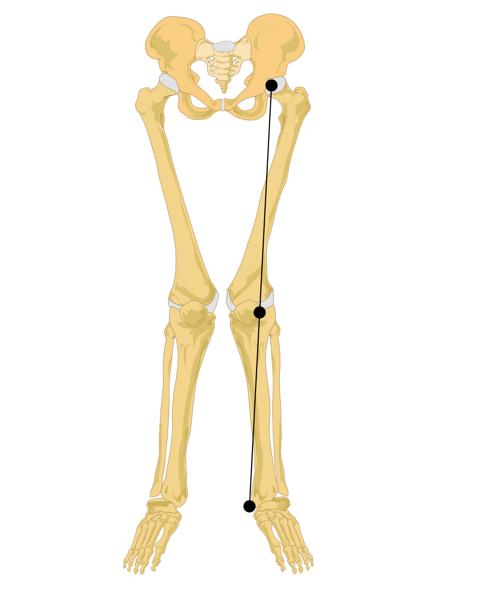

슬관절외반 (Knee Valgus)
검수 완료

쉽게 풀면
착지하거나 방향을 바꿀 때 무릎이 안쪽으로 확 모이는 자세이다. 이런 자세는 무릎 부상의 위험을 높인다.
왜 중요한가
무릎 외반은 착지나 방향전환 시 무릎이 안쪽으로 무너지는 정렬로, 전방십자인대 손상과 슬개대퇴 통증의 위험 요인으로 지목되어 선별 검사와 예방 훈련의 표적이 된다. 착지 오류 점수나 3차원 분석으로 정량화한다. 예방 훈련에서는 착지 시 무릎을 발끝 방향과 일치시키도록 지도하는 시각적 피드백 훈련과, 고관절 외전근·외회전근을 강화하는 저항 훈련이 함께 처방되는 경우가 많다.
핵심 정리
- 슬관절외반(knee valgus)은 무릎이 안쪽으로 모이는 자세이다. 의학 용어 genu valgum은 다리를 펴고 서 있을 때 무릎이 서로 닿는 상태로 정의된다.
- 임상 Q각의 정상 범위는 무릎을 편 상태에서 여성 22도 미만, 남성 18도 미만이며 평균은 남성 약 12도, 여성 약 17도이다.
- 엑스레이로 재는 hip-knee-ankle 각은 성인에서 약 1.0~1.5도 내반이 정상이다.
- 원인은 영양, 유전, 외상, 감염, 구루병 등이다.
예시로 보기
Larwa 등(2021)의 체계적 문헌고찰은 동적 슬관절외반을 전방십자인대(ACL) 파열의 주요 위험요인으로 꼽는다. 고관절 외전근의 약화, 착지 때의 강성, 몸통 안정성의 저하와 함께 설명하지만 결과는 엇갈린다. 여성 선수에서 연관성이 더 자주 보고된다.
자주 하는 오해
| 오해 | 바로잡기 |
|---|---|
| 무릎이 안쪽으로 모이면 곧 부상이 난다. | 연구 결과가 엇갈리며 여성 선수에서 연관이 더 많이 보고된다. |
| 동적 슬관절외반에는 합의된 공식 정의가 있다. | 해당 체계적 문헌고찰은 동적 슬관절외반의 공식 정의를 제시하지 않는다. |
| Q각은 남녀가 같다. | 남성 평균은 약 12도, 여성 평균은 약 17도로 다르다. |
논문에서는 이렇게 쓰입니다
실제 논문에서
국내 학술지 논문에서 이 용어가 쓰인 문장을 그대로 옮겼다. 제목·학술지·연도와 원문 링크를 함께 적었다.
“Zheng 등 23 의 연구에 따르면, 고관절 및 코어 근력을 포함한 전반적인 하체 강화는 착지 시 무릎 외반(knee valgus) 부하를 제어하고 전방십자인대(anterior cruciate ligament)에 가해지는 스트레스를 유의미하게 감소시킨다.”
전문 핸드볼 선수의 경기력을 결정하는 생리적 요인의 통합적 분석: 후향적 단면 연구, The Korean Journal of Sports Medicine, 2026 · KoreaMed Synapse · 원문 보기 ↗
조금 더 깊게 보면
2차원 영상에서 보이는 외반 각도는 고관절 내회전이 섞여 실제 관절 정렬을 반영하지 못할 수 있다. 외반이 부상을 예측한다는 결과는 연구마다 엇갈리고, 외반 자체보다 그 상황의 부하 크기와 근 제어가 더 중요할 수 있다. 무릎 외반은 정지된 자세에서의 정적 정렬과 동작 중 나타나는 동적 정렬이 다르게 평가될 수 있어, 단순히 서 있을 때 다리 모양만 보고 판단해서는 안 된다. 발목의 과도한 회내(pronation)나 고관절 외전근 약화가 무릎 외반을 유발하는 상위·하위 요인으로 함께 지목된다.
주의할 점
슬관절 외반은 고관절 근력 약화, 발목 정렬, 신경근 조절 등 여러 요인이 복합적으로 작용하여 나타나는 결과이다. 무릎 외반이 관찰된다고 해서 곧바로 부상이 발생한다는 뜻은 아니며, 부하의 크기와 반복 빈도, 선수의 회복 상태를 함께 고려해 위험도를 판단해야 한다.
참고 문헌
- Wikipedia contributors. (n.d.). Genu valgum. Wikipedia.
- Larwa, J., et al. (2021). Stiff landings, core stability, and dynamic knee valgus: A systematic review on documented anterior cruciate ligament ruptures in male and female athletes. PubMed Central.